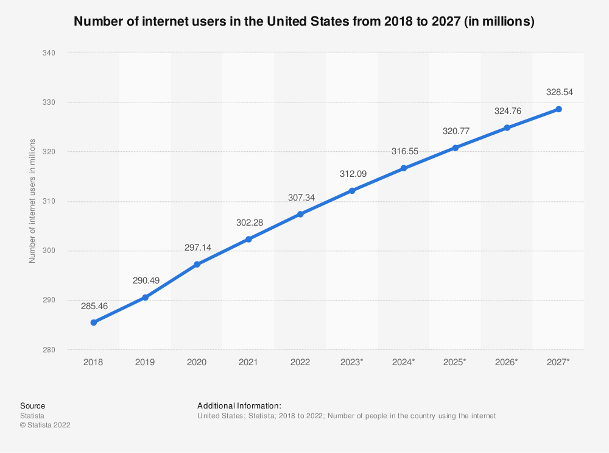
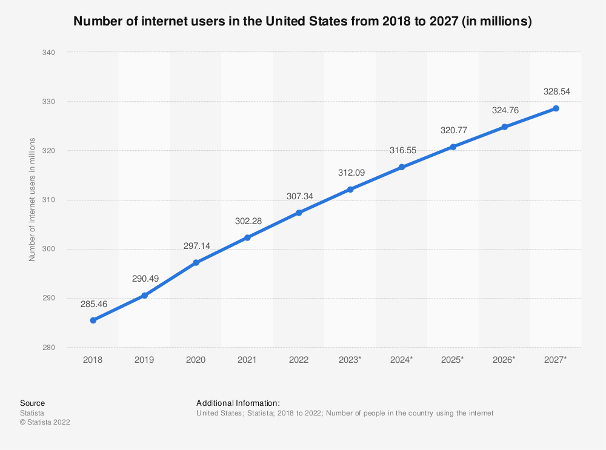

As it is evident by the format that I chose to use as the “presentation,” I chose web developer. This aligns to my initial
ideas because I like creating websites and I have over 100 hours of experience.
Stressful in the majority. Web developing deals with major yet simple errors; such errors are major because they are nerve
wracking to solve, but the solution is (most of the time) as simple as a semicolon.
Or that is what I thought...
The work environment for web developers can be very diverse. They may work in an office, or they may work remotely. They may
work for a company, or they may work for themselves. No matter what the work environment is like, web developers need to have
a good understanding of computers and the internet. They should be able to use various programming languages, and they should
be able to work with different types of software.
I plan to use this as my base, and then expand onto something else.
The growth in web developing is largely due to the fact that the internet has become an essential part of our lives. We use
it for everything from communication to entertainment and shopping. This has created a demand for skilled web developers who
can create websites that are both functional and attractive.
The number of people who are using the internet is growing every day, which means that there is a growing market for web
developers. In order to meet this demand, more and more people are learning how to develop websites.
There are a number of reasons why someone might want to learn how to develop websites. Maybe they have a great idea for a
website and they want to turn it into a reality. Or maybe they want to start their own web development business.
Whatever the reason, the growth in web developing is sure to continue.
There is a lot of technology required in web developing. This includes things like programming languages,
web servers, and databases. Programming languages are used to create the website's code.
Web servers are used to host the website. Databases are used to store information for the website.
I have seen evidence of fractal computers, and the use of quantum computers as an online service.
New technologies in web developing have allowed for more interactive and engaging websites.
These new technologies include HTML5, CSS3, and JavaScript.
With these new technologies, website developers are able to create websites that are more responsive to user input and provide a
more immersive experience. Additionally, these new technologies allow for more complex animations and interactions.
Well, I can solve many problems per minute, and that is a strong part of the job.
But seriously, I know that my major in computer science heavily involves the usage of the necesary programming languages
used in the development of websites.
I recently learned that even if you are right and the code is right, I might fail because of user use.
I know that in the computer built-space I can learn from experts in the field.